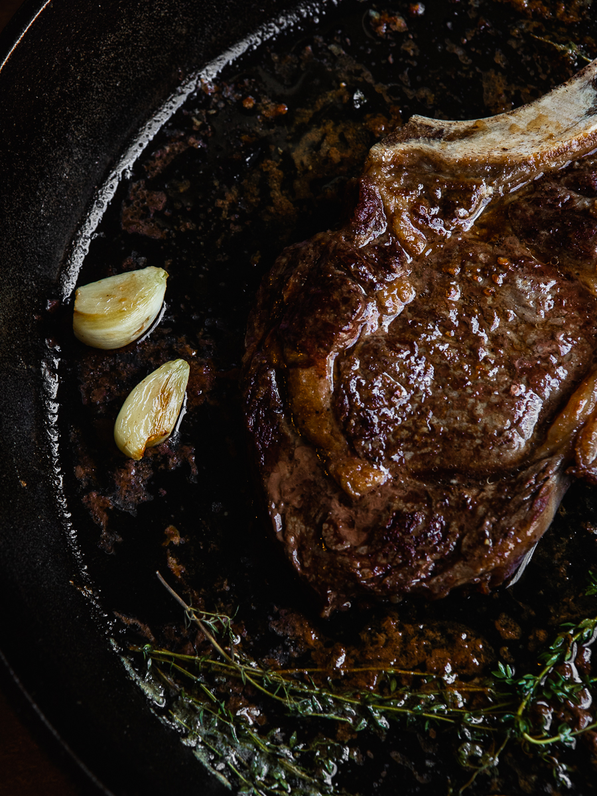

Garlic Butter Steak

Descriptions
This is a fool-proof recipe, for a pan seared, thick-cut, and bone-in steaks
These steaks come together in a snap with fresh garlic, butter, thyme,and salt and pepper. That's all you'll need!
The only thing to stress here at all, is to make sure you have butcher quality steaks.As with any meal, the quality of the ingredients you use makes all the difference.
A Few Things To Remember
Pat the steaks dry with a paper towel before cooking
Allow the steaks to sit room temperature for 20 minutes before cooking.
Season the steaks well on both sides with salt and pepper
A cast iron is best.
A meat thermometer is handy to ensure the proper internal temperature, and allow the cooked steaks to rest for 5-10 minutes before serving.
Ingredients
For 2 Servings
- 1 ribeye steak, 2 1/2 inch thick, preferably USDA Primeb
- Salt to taste
- Black pepper to taste
- 3 tablespoons canola oil
- 4 tablespoons butter
- 4 cloves garlic, peeled and smashed
- 2 sprigs fresh rosemary
- 3 sprigs fresh thyme
Steps
- Allow the steaks to rest at room temperature for 20-30 minutes
- Preheat the oven to 450 degrees F
- Pat the steaks dry on both sides with a paper towel. Massage all sides in olive oil and generously season both sides with salt and pepper.
- Heat a cast iron pan over high heat until quite hot-this is key as a piping hot pan is important to develop the carmalized golden "crust" on the steaks. I wait until I begin to see threads to smoke. Add the steaks, there should be a great sizzle. Gently push the steaks down so the sides are in full contact with the pan and sear, without moving them around, on high heat for 2 minutes on both sides until nice and brown.
- Reduce the ehat to low and add the butter, garlic, thyme, and rosemary. Tip the pan slightly to spoon the butter over the steak. Immediately place the pan in the oven for approximately 4-5 minutes, the time will depend on the thickness of the steaks and the desired doneness. A meat thermometer will help you to determine how long to finish in the oven.
- Note that the steaks should be removed from teh heat a few degrees shy of desired temperature as they will continue to cook, by about 5 degrees, as they rest. Let the steaks rest for 5-10 minutes for the juices to redistribute before serving. Serve with some of the pan drippings over teh steaks.
Notes
It is best to remove the steaks form the ehat just shy of the desired temperature, as the steaks will continue to cook as they rest. Also note that the size and thickness of the steak will affect the cooking time.